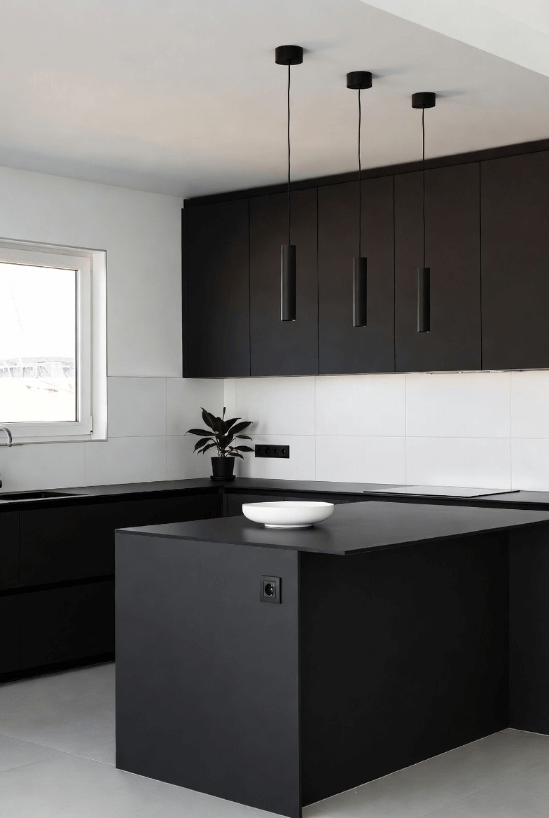
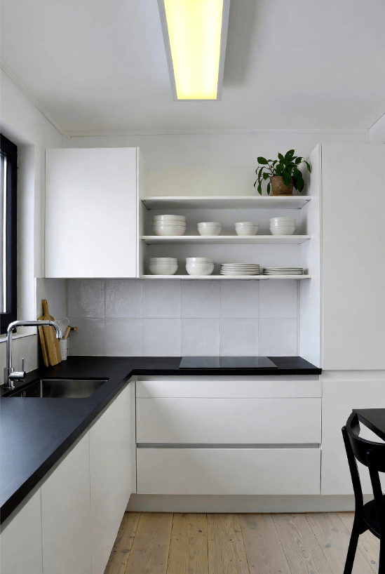
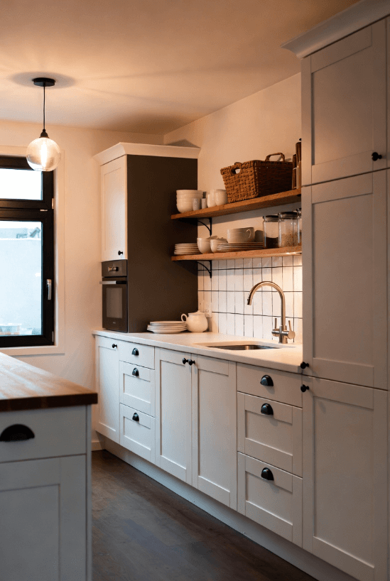

Keittiöremontit
Muutamme keittiösi kodin sydämeksi, jossa on ilo kokata Joensuussa ja Pohjois-Karjalassa
Kokonaisvaltainen keittiöremontti Joensuussa
Keittiö on kodin sydän, jossa vietetään paljon aikaa. Hyvä keittiö yhdistää toimivuuden, ergonomian ja estetiikan. Hoidamme keittiöremonttisi alusta loppuun – suunnittelusta ja mittauksesta kaappien valmistukseen, asennukseen ja viimeistelyyn Joensuussa ja Pohjois-Karjalassa.
Olipa kyse sitten täydestä keittiöremonteista tai pelkkien kaappien uusimisesta, saat meiltä ammattitaitoista palvelua ja korkealaatuista käsityötä. Valmistamme keittiökaapistot omassa verstaassamme käyttäen laadukkaita materiaaleja, ja huolehdimme siitä, että jokainen yksityiskohta on kohdallaan. Toteutamme kohteita myös Kontiolahdella ja Liperissä.
Keittiöremontin vaiheet
1. Alkukartoitus
Tapaamme kotona ja kartoitamme nykytilanteen, toiveesi ja tarpeet. Keskustelemme budjetista, aikataulusta ja käytännön järjestelyistä.
2. Suunnittelu
Suunnittelemme keittiön layout, kaappijärjestyksen ja työtilojen sijoittelun. Valitsemme yhdessä materiaalit, värit, ovet ja vetimet. Saat 3D-visualisoinnit.
3. Purku ja valmistelu
Puramme vanhan keittiön huolellisesti. Tarvittaessa teemme tai tilaamme sähkö- ja putkityöt sekä lattia- ja seinäpinnoitteet.
4. Kaappien valmistus
Valmistamme kaapistot käsin omassa verstaassamme. Jokainen kaappi tehdään mittatilaustyönä juuri sinun keittiöösi.
5. Asennus
Asennamme kaapistot, tasot, altaan, hanat ja kodinkoneet ammattitaidolla. Varmistamme, että kaikki toimii täydellisesti.
6. Viimeistely ja luovutus
Viimeistelemme yksityiskohdat, siivoamme tilan ja käymme läpi keittiön käytön ja huollon kanssasi.
Keittiötyylit
Valmistamme keittiöitä kaikissa tyyleissä - klassisesta moderniin. Tässä joitain esimerkkejä:

Moderni
Sileät ovet, minimalistinen ilme, integroitu teknologia. Värit: valkoinen, harmaa, musta.

Klassinen
Kehysovet, perinteiset vetimet, lämmin tunnelma. Puuovet tai maalatut pinnat.

Skandinaavinen
Vaaleat sävyt, luonnonmateriaalit, toimiva ja rauhallinen kokonaisuus.
Aloitetaan unelmakeittiön suunnittelu
Ota yhteyttä, niin tulemme katsomaan tilannetta paikan päälle. Ensimmäinen tapaaminen ja suunnittelu ovat maksuttomia.
Pyydä ilmainen tarjous